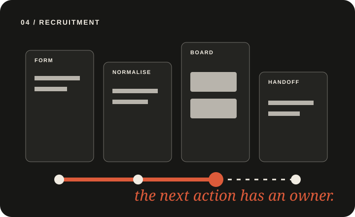

Recruitment Intake
Zapier · NotionForm-to-board workflow for team review
A club application arrived as a flat form response. I mapped the fields into a structured board so reviewers can see status, ownership, comments, and the next action in one place.
ProblemResponses were hard to triage in a shared sheet.
RoleWorkflow mapping and automation build.
ResultA reviewable board with explicit handoffs.
AccessStatic walkthrough · synthetic data.

Page-level disclosure: illustrative UI — synthetic/test data. The board geometry and progress bars are placeholders for the workflow, not volume, adoption, or performance evidence.
Technical evidence
From form submission to structured board
Source
Google Form
Applicants submit through a familiar form. Responses land in one intake stream.
Automation
Zapier mapping
Fields are normalised and sent to the destination record with a predictable status.
Handoff
Notion board
Reviewers see ownership, comments, and the next action in one place.
Illustrative interface
A board that makes the next action visible
Applicants · review board
NEW
CV CHECKED
EMAIL SENT
INTERVIEW
comment thread
Illustrative board with synthetic records. No applicant data or production workspace is published (test data).
Design outcome
Adoption starts with a smaller change
01
Keep the familiar entry point
Applicants continue to use the form while the review workflow improves behind it.
02
Give each stage an owner
A record carries the status and next action instead of relying on a shared-memory handoff.
03
Show the evidence boundary
The public page demonstrates the mechanism; adoption and volume claims remain pending owner evidence.